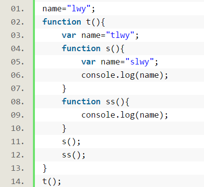
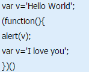
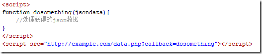
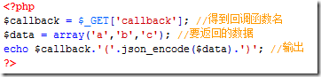

Js中没有用var声明的变量都是全局变量,成为了顶层对象window的属性

当执行s时，将创建函数s的执行环境(调用对象),并将该对象置于链表开头，然后将函数t的调用对象链接在之后，最后是全局对象。然后从链表开头寻找变量name,很明显name是"slwy"。
但执行ss()时，作用域链是： ss()->t()->window,所以name是”tlwy"
在JS中，就是把定义在后面的东东（变量或函数）提升到前面中定义
就是把变量提升提到函数的top的地方需要说明的是，变量提升 只是提升变量的声明，并不会把赋值也提升上来。

此段代码会报错undefined 因为在函数立即函数内部进行了变量提升，先做了var v 而后alert(v)之后再赋值,相当于未定义
注意函数使用var声明也会收到变量提升的影响
当查找一个对象的属性时，JavaScript 会向上遍历原型链，直到找到给定名称的属性为止，到查找到达原型链的顶部 - 也就是 Object.prototype - 但是仍然没有找到指定的属性，就会返回 undefined
new实例化过程中会执行 child.__proto__=Parent.prototype,__proto__js中不对外公开，实例化的对象中的属性会通过__prot0__找父类中的原型方法,一直向上找直到Object
1.创建一个新的数组存放结果
2.创建一个空对象
3.for循环时，每次取出一个元素与对象进行对比，如果这个元素不重复，则把它存放到结果数组中，同时把这个元素的内容作为对象的一个属性，并赋值为1，存入到第2步建立的对象中。
使用Promise来解决回调地狱问题
Promise是一种抽象对象。CommonJS定义了Promises/A规范,Promise模式在任何时刻都处于以下三种状态之一
未完成（unfulfilled）
已完成（resolved）
拒绝（rejected）
1.通过jsonp跨域 在js中，我们直接用XMLHttpRequest请求不同域上的数据时，是不可以的。但是，在页面上引入不同域上的js脚本文件却是可以的，jsonp正是利用这个特性来实现的。
比如，有个a.html页面

因为是当做一个js文件来引入的，所以http://example.com/data.php返回的必须是一个能执行的js文件，php代码是这样的

最终那个页面输出的结果是:
2、通过修改document.domain来跨子域
3、使用window.name来进行跨域
4、使用HTML5中新引进的window.postMessage方法来跨域传送数据
1.文件合并
2.文件最小化/文件压缩
3.使用 CDN 托管
4.缓存的使用（多个域名来提供缓存）
闭包是指在 JavaScript 中，内部函数总是可以访问其所在的外部函数中声明的参数和变量，即使在其外部函数被返回（寿命终结）了之后
闭包是 JavaScript 一个非常重要的特性，这意味着当前作用域总是能够访问外部作用域中的变量。 因为 函数 是 JavaScript 中唯一拥有自身作用域的结构，因此闭包的创建依赖于函数
两者都是通过调用一个对象，并且可以修改此对象的this指针，两者的传参不同，前者使用常规的arg1,arg2,arg3...传参 而apply则通过数组传参
.bind()创建了一个函数，当这个函数在被调用的时候，它的 this 关键词会被设置成被传入的值（这里指调用bind()时传入的参数）。因此，我们传入想要的上下文，this(其实就是 myObj)，到.bind()函数中。然后，当回调函数被执行的时候， this 便指向 myObj 对象。
Function.prototype.bind = function (scope) {
var fn = this;
return function () {
return fn.apply(scope);
};
}网络中将多张小的png图合并成一张png图，可以有效的减少网络请求数量，并且合并后的图片size也更小
使用过bootstrap和YUI的栅格系统
前者是通过float与width值来定位
后者通过display-inline-block方式定位,修改了wordspacing和lettr spacing值
更喜欢后者，天生的块级属性可以更好的作用于布局上
1、创建一个空对象，并且 this 变量引用该对象，同时还继承了该函数的原型。
2、属性和方法被加入到 this 引用的对象中。
3、新创建的对象由 this 所引用，并且最后隐式的返回 this
var obj = {};
obj.__proto__ = Base.prototype;
Base.call(obj);1、尽可能的减少 HTTP 的请求数
2、使用CDN （内容分发网络）：Use a Content Delivery Network
3、添加Expire/Cache-Control 头：Add an Expires Header
4、启用Gzip压缩：Gzip Components
5、将css放在页面最上面 （ Put Stylesheets at the Top）
6、将script放在页面最下面 （Put Scripts at the Bottom ）
7、避免在CSS中使用Expressions （Avoid CSS Expressions ）
8、把javascript和css都放到外部文件中 （Make JavaScript and CSS External ）
9、减少DNS查询 (Reduce DNS Lookups)
10、压缩 JavaScript 和 CSS (Minify JavaScript )
11、避免重定向 (Avoid Redirects )
12、移除重复的脚本 (Remove Duplicate Scripts )
13、配置实体标签（ETags） (Configure ETags )
14、使 AJAX 缓存 (Make Ajax Cacheable )
100-199 用于指定客户端应相应的某些动作
200-299 用于表示请求成功。
300-399 用于已经移动的文件并且常被包含在定位头信息中指定新的地址信息。
400-499 用于指出客户端的错误。400 - 语义有误，当前请求无法被服务器理解。401 - 当前请求需要用户验证 403 - 服务器已经理解请求,但是拒绝执行它
500-599 用于支持服务器错误。 503 – 服务不可用
查找浏览器缓存
DNS解析、查找该域名对应的IP地址、重定向（301）、发出第二个GET请求
进行HTTP协议会话
客户端发送报头(请求报头)
服务器回馈报头(响应报头)
html文档开始下载
文档树建立，根据标记请求所需指定MIME类型的文件
浏览器加载：根据请求的URL进行域名解析，向服务器发起请求，接收文件（HTML、JS、CSS、图象等）
浏览器解析：对加载到的资源（HTML、JS、CSS等）进行语法解析，建议相应的内部数据结构（比如HTML的DOM树，JS的（对象）属性表，CSS的样式规则等等）
JavaScript语言,深入了解它对于研究nodeJS和成为全栈工程师有很大的裨益，最近的3年希望能够通过自己所学的知识开发属于自己的产品，通过了解用户需求去解决生活中的实际问题